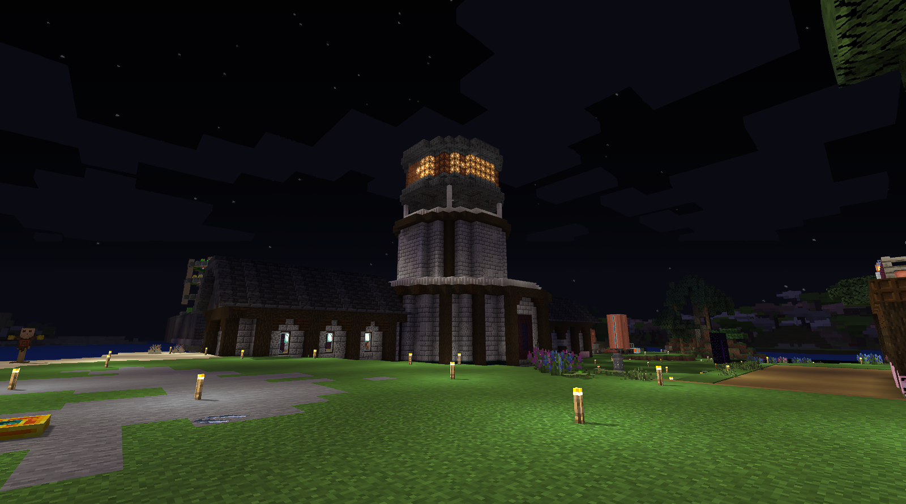

Forge 1.20.1
Create & Physics Focus
- Installed content
- 229 mods
- Capacity
- 5 players
- 4 GB
- Integration
- Discord bridge
Server administration · Archived and documented
Three private, self-hosted Minecraft environments that I assembled and maintained for a small group of players using Forge, NeoForge, and Paper.
Highlighted technical terms include an optional plain-language explanation.
Environment gallery
Explore a documented modded environment featuring settlement planning, automated farming, and connected material-processing systems.

Documented environments
These profiles document the environments I administered. The third-party mods and plugins were curated and configured by me, not developed by me.
Forge 1.20.1
NeoForge 1.21.1
Paper 1.20.4
Responsibilities demonstrated
Continue exploring
Explore five interactive environment assets and learn about my Unity technical-art contributions to the in-development horror project.
Explore BantayGabi